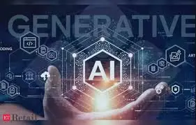

Generative AI (Gen AI) is a subset of artificial intelligence that focuses on creating new content, such as images, text, music, and more, by learning patterns from existing data. Here are some key points about Gen AI:
1. Types of Generative Models:
- Generative Adversarial Networks (GANs): These consist of two neural networks, a generator and a discriminator, that work together to create realistic data. GANs are used for generating images, videos, and even deepfake content.
- Variational Autoencoders (VAEs): These models encode input data into a latent space and then decode it back to generate new data. VAEs are often used for generating images and other types of data.
2. Applications of Gen AI:
- Image Generation: Creating realistic images from scratch or transforming existing images. Examples include generating artwork, enhancing photos, and creating avatars.
- Text Generation: Producing human-like text based on a given prompt. This is used in chatbots, content creation, and language translation.
- Music and Audio Generation: Composing new music or generating realistic speech. Applications include music production, voice synthesis, and sound effects.